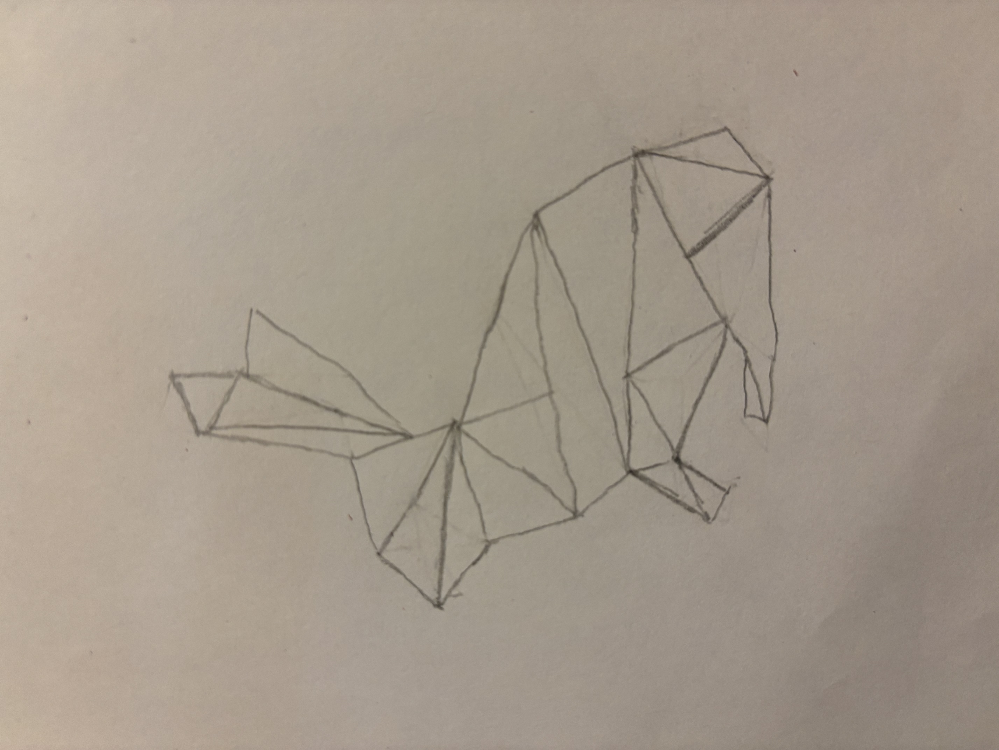
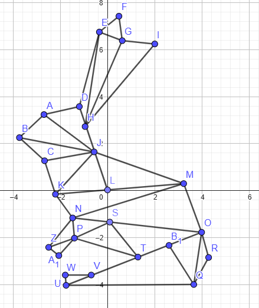

XXX
Awesomeness:
Red
Green
Blue
Number of Segments
Number of Points for Stars
Size
Magenta
Animation:
Yellow
Animation:
Camera Angle
Rabbit Drawing:
The rabbit is generated with random colors each time the "Draw Picture" button is pressed.


Awesomeness!
I added 2 features:
- A star shape that the user can use to paint with. I wanted to experiment more with geometry so I went for a star shape. And aren't stars nice?
- Ability to paint random shapes with random sizes and colors. It's a good way to create some modern art.